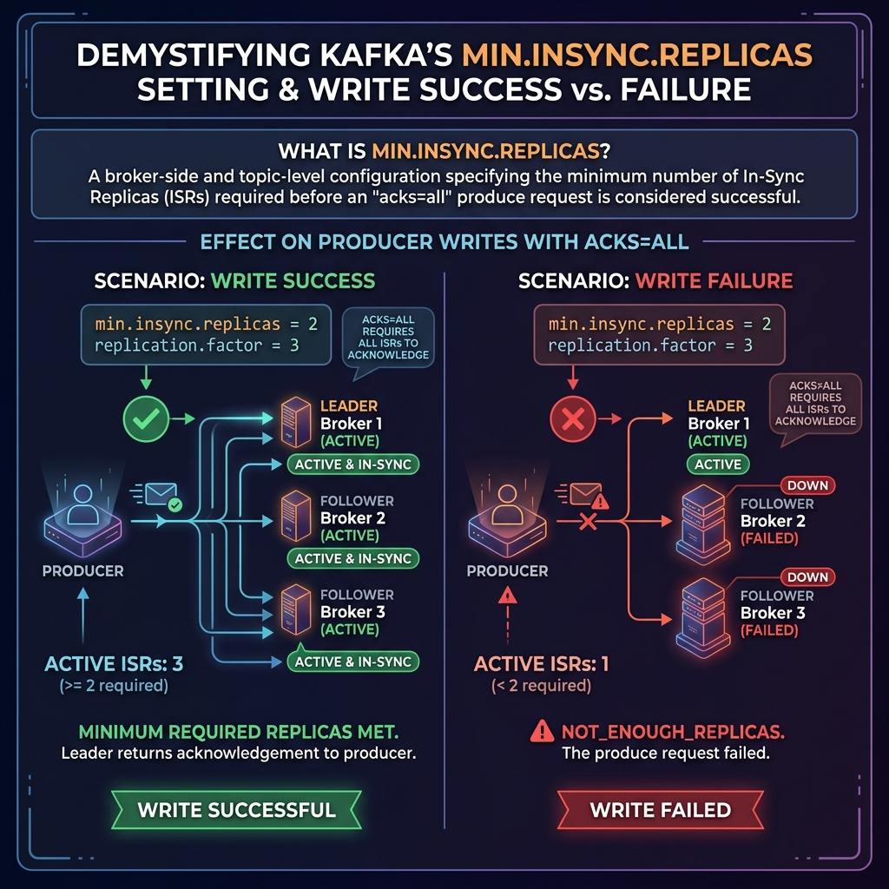

Setting acks=all on your producer is the first step toward preventing data loss. But did you know that acks=all by itself does not guarantee that your message is replicated?
If your replication factor is 3, but 2 of your brokers crash, only 1 broker remains online. In this scenario, writing with acks=all will succeed after writing to the single remaining leader. If that broker then crashes, your data is gone forever. This is where min.insync.replicas becomes essential.

Imagine a company bank account that normally requires three executors to approve a check (Replication Factor = 3).
If two executors go on vacation, you only have one executor left. If you write a check, the single remaining executor signs it and releases the funds. However, having only one signature is highly risky (single point of failure).
To protect yourself, you establish a co-signing rule: "No funds can be released unless at least *two* executors sign the document" (min.insync.replicas = 2). If only one executor is in the office, the system rejects the transaction, preventing risky payments until a second executor returns.
What is min.insync.replicas?
The min.insync.replicas variable is a broker/topic level configuration. It defines the minimum number of In-Sync Replicas (ISR) that must acknowledge a write for the write to be considered successful, but only when the producer writes with acks=all.
If the active ISR count falls below this limit, the broker rejects the write request and throws a NotEnoughReplicasException (or NotEnoughReplicasAfterAppendException) to the producer client.
The Golden Rule of Production Safety
For mission-critical data pipelines that require absolute zero data loss, use the following configuration layout:
- Replication Factor (RF): 3 (Ensures 3 copies of data exist across 3 brokers).
- min.insync.replicas (minISR): 2 (Ensures at least the leader and 1 follower must write the message before confirmation).
- Producer acks: all (Forces the producer client to wait for this replication confirmation).
With this setup, you can tolerate one broker failure with zero data loss. If one broker fails, the ISR count drops to 2. Writes continue succeeding because the minISR limit of 2 is met. If a second broker fails, the ISR count drops to 1. Writes are rejected, protecting your data integrity by refusing to write to a single remaining node.
Example Configuration
In your broker's server.properties file, or when creating a topic, you define this limit:
# Set global default in server.properties
min.insync.replicas=2You can also alter this setting programmatically on a specific topic:
Map<ConfigResource, Collection<AlterConfigOp>> updateConfigs = new HashMap<>();
ConfigResource resource = new ConfigResource(ConfigResource.Type.TOPIC, "payments");
AlterConfigOp op = new AlterConfigOp(
new ConfigEntry("min.insync.replicas", "2"),
AlterConfigOp.OpType.SET
);
updateConfigs.put(resource, Collections.singletonList(op));
adminClient.incrementalAlterConfigs(updateConfigs).all().get();Conclusion
Data durability in Kafka is a team effort. Always pair your producer's acks=all with a topic-level min.insync.replicas=2 policy to prevent single-point-of-failure writes and build a truly resilient data architecture.